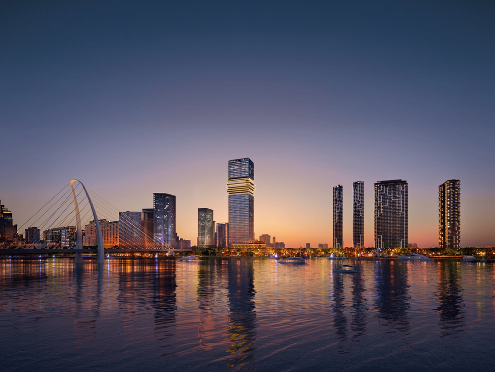
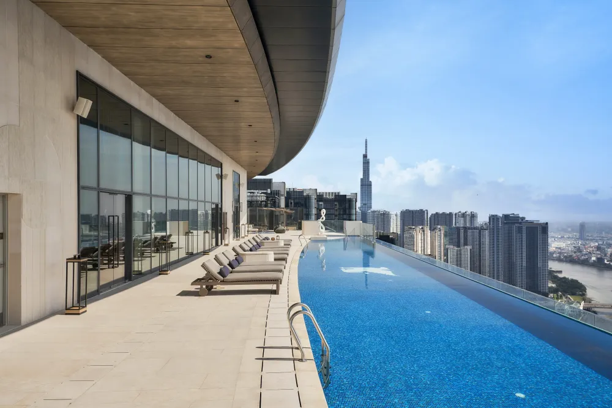
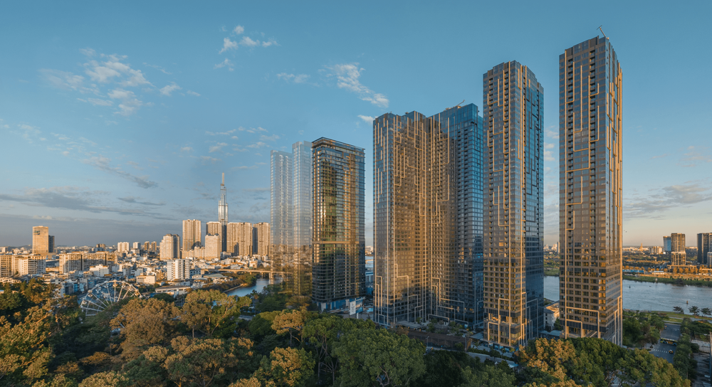
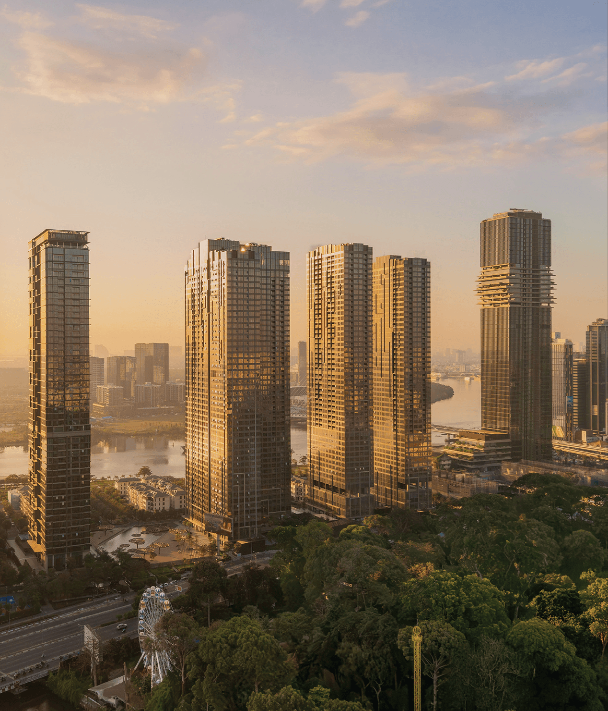
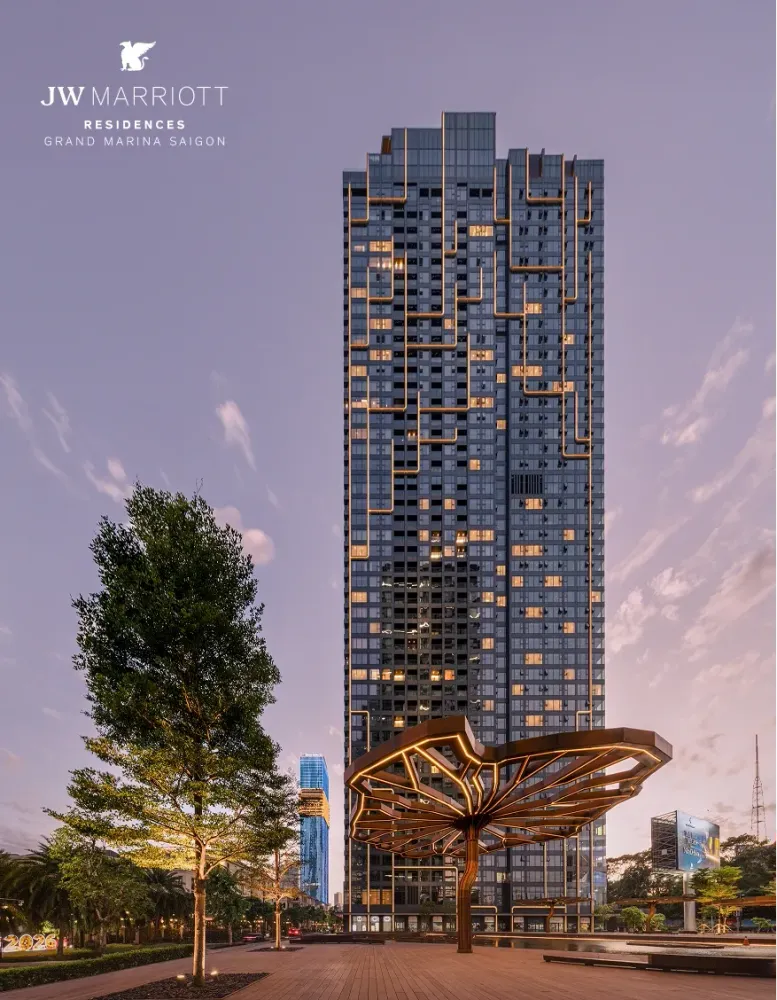
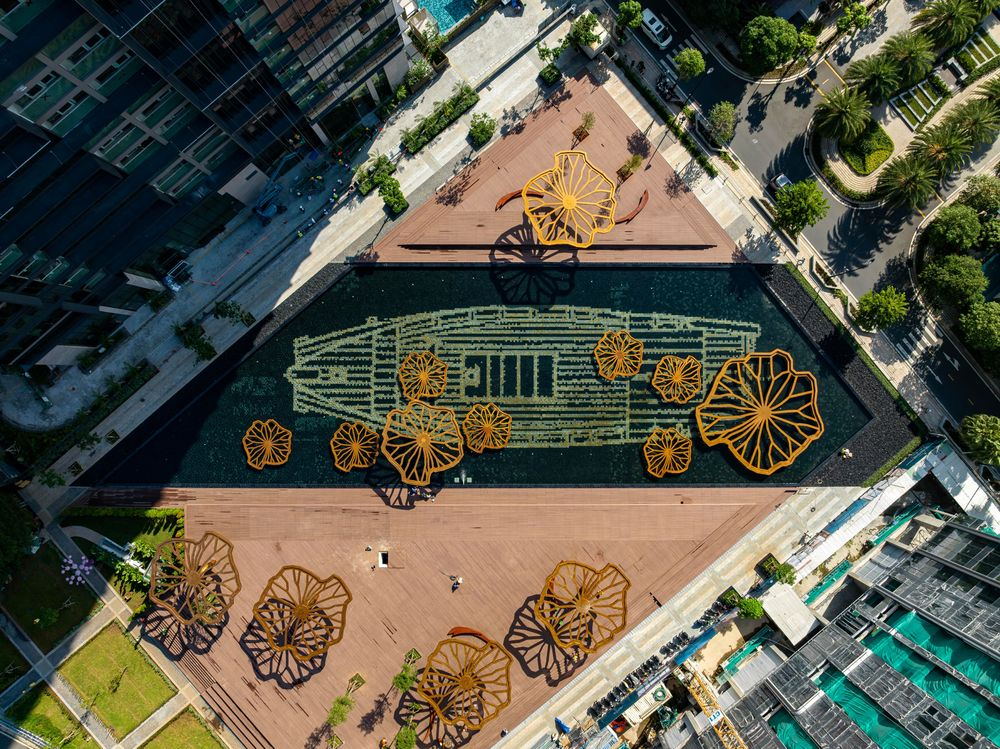
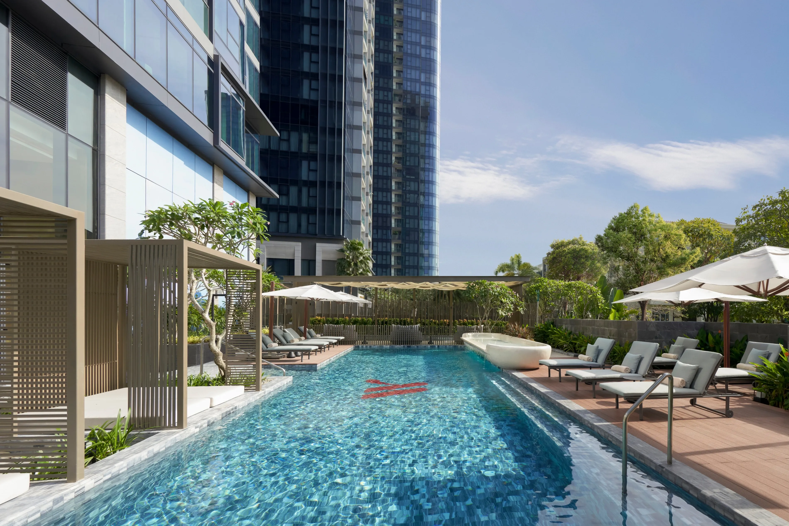
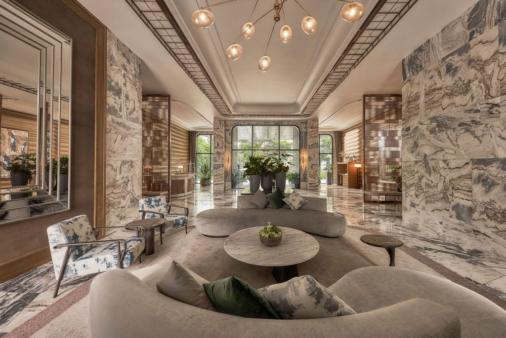
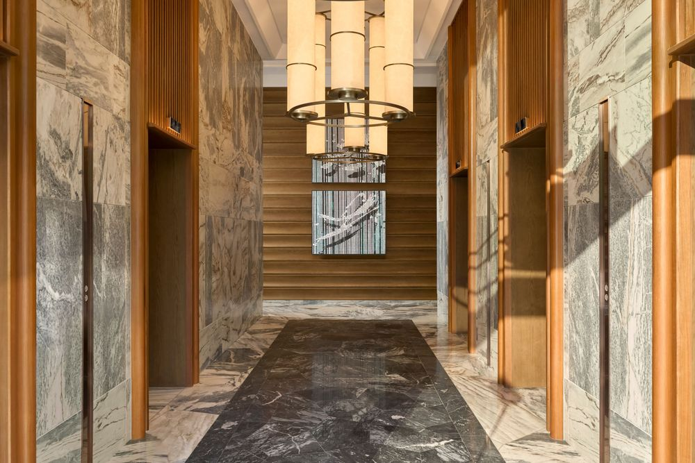
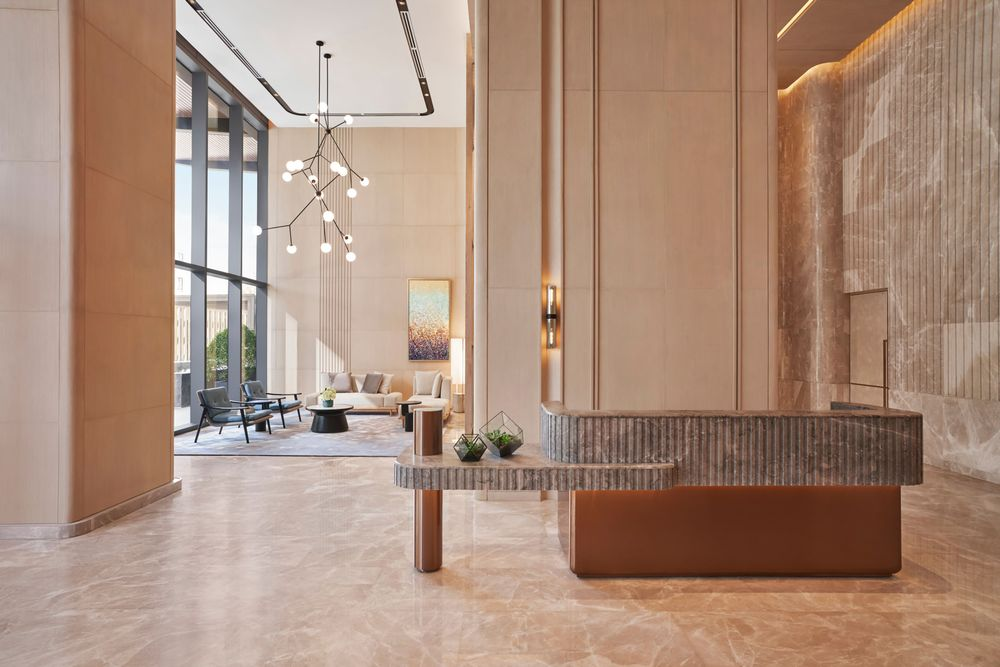

Grand Marina Saigon (Quận 1): giá rao khoảng 479 triệu/m² đứng ở đâu so với thị trường?
Cập nhật 01/11/2026 · Định vị giá, chưa chạy mô hình · Soi Giá Dự Án

Hình 1. Phối cảnh Grand Marina Saigon. Nguồn: masterisehomes.com (hình minh họa của chủ đầu tư, truy cập 01/11/2026).
Miễn trừ. Đây là phân tích tham khảo dựa trên dữ liệu công khai, không phải tư vấn đầu tư hay định giá chính thức. Dự án đã bàn giao một phần và đang giao dịch ở thị trường thứ cấp, không còn bảng giá mở bán để so sánh. Vì vậy bài này chưa tính giá hợp lý theo mô hình hai dự án đối chiếu và chỉ định vị mặt bằng giá từ số liệu thu được. Các số liệu là tin rao, không phải giá giao dịch.
1. Tóm tắt nhanh
Giá rao thứ cấp (1 tin tiêu biểu)479 tr/m² ≈ 18.400 USD/m²
Giá sơ cấp trung tâm TP.HCM (trung bình)~190 tr/m² theo báo cáo Cushman & Wakefield
Gấp khoảng2,5× so với mức trung bình khu trung tâm
Một tin rao căn 3 phòng ngủ 121 m² tại tòa Sea (JW Marriott Residences), view sông trực diện, giá 58 tỷ đồng (đã gồm mọi chi phí), tương đương khoảng 479 triệu/m². So với mức giá sơ cấp bình quân khu trung tâm TP.HCM khoảng 190 triệu/m², đây là mức gấp khoảng 2,5 lần. Chênh lệch này phản ánh phân khúc hàng hiệu và vị trí sông Sài Gòn, nhưng một tin rao đơn lẻ không đại diện cho cả dự án.
Quảng cáo
2. Vị trí
Dự án nằm trên khu đất Ba Son, số 2 Tôn Đức Thắng, phường Bến Nghé, Quận 1, mặt sông Sài Gòn, đối diện bán đảo Thủ Thiêm. Quy mô khu đất khoảng 10 ha theo chủ đầu tư.
Hình 2. Toàn cảnh khu Ba Son và sông Sài Gòn. Nguồn: masterisehomes.com.
3. Sản phẩm
Hạng mục
Thông tin
Chủ đầu tư
Masterise Homes
Quy mô
Khoảng 10 ha; hơn 4.200 sản phẩm gồm căn hộ, officetel, shophouse (theo Thư viện Pháp luật)
Thương hiệu
Marriott Residences và JW Marriott Residences (Marriott không sở hữu, phát triển hay bán dự án theo thông báo của chủ đầu tư)
Tiến độ
Tòa Lake mở cửa ngày 14/11/2023 (khu Marriott Residences đầu tiên tại Việt Nam); tòa Sea (JW Marriott) đã cất nóc

Hình 3. Hồ bơi trên cao nhìn ra sông Sài Gòn. Nguồn: masterisehomes.com.
Hình ảnh thực tế các tòa đã hoàn thiện
Trang chính thức của dự án (masterisehomes.com/grand-marina-saigon) không đăng mặt bằng căn hộ hay danh sách diện tích từng loại căn tại thời điểm truy cập, chỉ có hình ảnh dự án, tiện ích và nội thất khu vực chung. Vì vậy bài này chưa có bảng diện tích và mặt bằng căn hộ; khi chủ đầu tư công bố, chúng tôi sẽ bổ sung.

Hình 4. Cụm tháp đã hoàn thiện nhìn từ phía Thảo Cầm Viên, sau lưng là sông Sài Gòn. Nguồn: masterisehomes.com (trang Grand Marina, Saigon), truy cập 01/11/2026.

Hình 5. Cụm tháp trong ánh nắng sớm, bên bờ sông Sài Gòn. Nguồn: masterisehomes.com (trang Grand Marina, Saigon), truy cập 01/11/2026.Hình 6. Căn hộ nhìn ra sông Sài Gòn và cầu Ba Son về đêm. Nguồn: masterisehomes.com (trang Grand Marina, Saigon), truy cập 01/11/2026.

Hình 7. Tòa JW Marriott Residences và công trình cây sen thép ở quảng trường. Nguồn: masterisehomes.com (trang Grand Marina, Saigon), truy cập 01/11/2026.
Cảnh quan và không gian chung

Hình 8. Công viên Lá Sen và mặt hồ mô phỏng hình con tàu của xưởng Ba Son. Nguồn: masterisehomes.com (trang Grand Marina, Saigon), truy cập 01/11/2026.

Hình 9. Hồ bơi ngoài trời ở tầng trệt. Nguồn: masterisehomes.com (trang Grand Marina, Saigon), truy cập 01/11/2026.

Hình 10. Sảnh chính. Nguồn: masterisehomes.com (trang Grand Marina, Saigon), truy cập 01/11/2026.

Hình 11. Sảnh thang máy. Nguồn: masterisehomes.com (trang Grand Marina, Saigon), truy cập 01/11/2026.

Hình 12. Khu lễ tân. Nguồn: masterisehomes.com (trang Grand Marina, Saigon), truy cập 01/11/2026.
4. Các mốc giá thu thập được
Mốc
Giá
Ghi chú
Giá tham khảo khi nhận giữ chỗ (2021)
từ 340 triệu/m²
CafeLand, giá tham khảo thị trường
Giá khảo sát căn hộ hàng hiệu
từ ~15.000 USD/m²
Thư viện Pháp luật, khoảng từ 19 tỷ cho căn 1PN
Tin rao thứ cấp, 3PN 121 m² (tòa Sea)
58 tỷ ≈ 479 triệu/m²
guland.vn, giá rao, đã gồm chi phí
Giá sơ cấp trung tâm TP.HCM (bình quân)
~190 triệu/m²
Cushman & Wakefield (số liệu 2026, theo bản tóm tắt tìm kiếm)
Cách tính diện tích (thông thủy hay tim tường), VAT và nội thất của các mốc trên không thống nhất, nên chưa thể quy về một đơn vị so sánh chặt chẽ.
5. Vì sao chưa chạy mô hình
Dự án ở phân khúc hàng hiệu với mức giá hàng trăm triệu/m²; chúng tôi chưa tìm được hai dự án đối chiếu cùng phân khúc có đủ tin rao (tối thiểu 10 tin mỗi dự án).
Không còn giá công bố hiện hành để tính chênh lệch so với giá hợp lý, chỉ có tin rao thứ cấp.
Khi có đủ dữ liệu đối chiếu và bảng giá sơ cấp (nếu chủ đầu tư mở bán đợt mới), bài sẽ được cập nhật thành phân tích đầy đủ.
6. Kết luận
Grand Marina Saigon nằm ở nhóm giá cao nhất thị trường căn hộ TP.HCM; tin rao tiêu biểu cao gấp khoảng 2,5 lần mức sơ cấp bình quân khu trung tâm. Việc mức giá đó có hợp lý hay không cần dữ liệu đối chiếu cùng phân khúc mà bài này chưa có. Người mua nên dựa vào giao dịch thực tế và bảng giá của chủ đầu tư, không dựa vào một vài tin rao.
Cơ sở tính. 58.000 triệu đồng ÷ 121 m² = 479,3 triệu/m². Quy đổi USD theo tỷ giá khoảng 26.030 VND/USD. Số liệu 190 triệu/m² chỉ để tham chiếu mặt bằng chung. Xem phương pháp.
Nguồn: masterisehomes.com (thông tin dự án, thông báo mở cửa tòa Lake ngày 14/11/2023); Thư viện Pháp luật (tổng quan dự án); CafeLand; guland.vn (tin rao thứ cấp); Cushman & Wakefield (qua bài báo thị trường), truy cập 01/11/2026. Hình ảnh: masterisehomes.com, thuộc quyền của chủ đầu tư; được dùng để minh họa và dẫn nguồn.